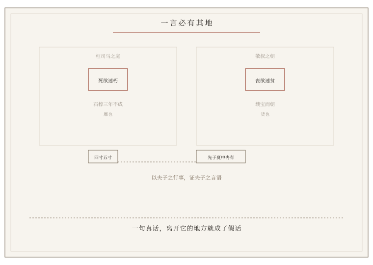

檀弓上 · 三·七十五 · 第 278 课
有子問於曾子曰：「問喪於夫子乎？」曰：「聞之矣：喪欲速貧，死欲速朽。」有子曰：「是非君子之言也。」曾子曰：「參也聞諸夫子也。」有子又曰：「是非君子之言也。」曾子曰：「參也與子游聞之。」有子曰：「然，然則夫子有為言之也。」
说什么事：有子问曾子有没有从夫子那里听说过「失位之礼」，曾子说听过——「失了位要快点穷，死了要快点烂」。有子两次说这不是君子的话。曾子说是与子游一同听来的。有子便改口：那么夫子是有为而发。
落在哪一层：言语与语境。论一句真话如何被误当通则。
为何编在此位：上节论「两不可为」，此节论「一言不可断」。一论器之不成，一论言之不可孤立。
【经】有子問於曾子曰：「問喪於夫子乎？」曰：「聞之矣：喪欲速貧，死欲速朽。」有子曰：「是非君子之言也。」曾子曰：「參也聞諸夫子也。」有子又曰：「是非君子之言也。」曾子曰：「參也與子游聞之。」有子曰：「然，然則夫子有為言之也。」
曾子以斯言告於子游。子游曰：「甚哉！有子之言似夫子也。昔者夫子居於宋，見桓司馬自為石槨，三年而不成。夫子曰：『若是其靡也，死不如速朽之愈也。』死之欲速朽，為桓司馬言之也。南宮敬叔反，必載寶而朝。夫子曰：『若是其貨也，喪不如速貧之愈也。』喪之欲速貧，為敬叔言之也。」
曾子以子游之言告於有子。有子曰：「然，吾固曰非夫子之言也。」曾子曰：「子何以知之？」有子曰：「夫子制於中都，四寸之棺，五寸之槨，以斯知不欲速朽也。昔者夫子失魯司寇，將之荊，蓋先之以子夏，又申之以冉有，以斯知不欲速貧也。」
【注】有子，孔子弟子有若也。夫子卒后问此，庶有异闻也。喪，謂仕失位也。魯昭公孫於齊曰「喪人其何稱」。貧、朽，非人所欲。桓司馬，宋向戌之孫，名魋。靡，侈。敬叔，魯孟僖子之子仲孫閱。蓋嘗失位去魯，得反，載其寶來朝於君。中都，魯邑名也，孔子嘗為之宰，為民作制。孔子由中都宰為司空，由司空為司寇。將應聘於楚。言汲汲於仕得祿。
【疏】此一节论丧不欲速贫、死不欲速朽之事。「有子问于曾子」者，此孔子卒后，弟子相问，冀有所异闻也。「问丧」，谓问失本位居他国礼也。有子唯问丧不问死，曾子以丧、死二事报之者，以丧、死俱为恶事，贫、朽又事类相似。案此「速贫」在前、「速朽」在后，而下子游之对先云「死欲速朽」后言「丧欲速贫」，随孔子所见言之先后也：孔子为中都宰制棺椁不用速朽，其事在前；失鲁司寇使子夏、冉有先適楚，不欲速贫，其事在后。故子游先言速朽后言速贫。案《世本》「向戌生东邻叔子超，超生左师眇，眇即向巢也」，魋是巢之弟，故云向戌孙也。崔灵恩云：诸侯三卿，司徒兼冢宰、司马兼宗伯、司空兼司寇，三卿之下立五小卿为五大夫。今夫子为司空者，为小司空也，从小司空为小司寇也；鲁有孟、叔、季三卿为政，又有臧氏为司寇，故知孔子为小司寇。案《世家》定十四年齐人归女乐，孔子去鲁適卫……是鲁哀公六年；以此言之，失司寇在定十四年，之楚在哀公六年，其间年月甚远。
问丧 问失位去国之礼。注「丧，谓仕失位也」，非死亡之丧。
丧人其何称 失位之人该称什么。鲁昭公出奔于齐时之语，注引以证「丧」为失位。
速贫 快些穷。指失位之后不要汲汲求禄。
速朽 快些烂。指葬不必厚。
是非君子之言 这不是君子（指孔子）会说的话。
有为言之 有所为而发，即针对某人某事而说。为，因。
甚哉，有子之言似夫子也 有子这话真像夫子说的。是子游的赞语。
靡 侈，奢侈。石椁三年不成，是靡。
货 财货。载宝而朝，是货。
制于中都 在都邑中都为民作制（规定棺椁尺寸）。
先之以子夏，又申之以冉有 先派子夏去，再派冉有去重申。是先容后申的求仕之法。
有子问曾子：「你从夫子那里听过失位之礼吗？」曾子说：「听过：失了位要快点穷，死了要快点烂。」有子说：「这不是君子的话。」曾子说：「我参是亲从夫子那里听来的。」有子又说：「这不是君子的话。」曾子说：「我参是和子游一同听来的。」有子说：「那么，夫子是有为而发的。」
曾子把这话告诉子游。子游说：「有子这话真像夫子说的！从前夫子在宋，见桓司马自己做石椁，三年做不成，夫子说：『这样奢侈，死了还不如快点烂的好。』——那「死要快烂」，是为桓司马说的。南宫敬叔回国，总载着宝物去朝见，夫子说：『这样贪财，失了位还不如快点穷的好。』——那「丧要快贫」，是为敬叔说的。」
曾子把子游的话告诉有子。有子说：「我本来就说这不是夫子的话。」曾子问：「你怎么知道？」有子说：「夫子在中有制，棺四寸、椁五寸，由此知道他不主张快烂。从前夫子失了鲁司寇之职，将往楚国，先派子夏去，再派冉有去重申，由此知道他不主张快贫。」
此节是一段完整的论辩，四层推进，很像一场现场教学。
第一层：有子的两次否定。他并没有亲闻，只凭「这话不像君子说的」就断定非夫子之言。这是以「像不像」为标准的判断。
第二层：曾子的两次举证。「闻诸夫子」「与子游闻之」——人证越来越硬。到这里，有子的处境是：话确实出自夫子之口，但话不对劲。
第三层：有子的转语。「然，然则夫子有为言之也」——一个「然」字让了半步，紧接着用「有为言之」把话重新安置。这是本节的关键一步：不改其真，而改其域。
第四层：子游的还原与有子的反证。子游给出两处语境（桓司马石椁、南宫敬叔载宝），一句话归位；有子再以夫子自己的行为反证（中都制棺、之荆先容），把「有为言之」这一判断夯实。
全过程：先疑其言，再信其人，再定其境。三步走完，一句危险的话才变成一句安全的话。
第一层 为什么「贫」「朽」不像君子之言 注一句点破：「贫、朽，非人所欲。」君子不教人求贫、求朽。曾子报以「丧欲速贫、死欲速朽」两句，把两件人所不欲的事说成应当，听上去就是反人情。有子的直觉在这里是对的：礼不反人情。
第二层 「有为言之」是孔门解经的基本法 这四个字解决了一个大问题：一句话既不能否认它出自圣人之口，又不能把它当通则用，怎么办？答：把它放回它发生的场合。放到桓司马的石椁前，「速朽」是救奢之药；放到敬叔载宝的车后，「速贫」是救贪之药。药对症，不对人；出了这个症，就不该吃这副药。
第三层 以行证言的分量 有子的反证最硬：不看夫子说什么，看夫子做什么。中都制棺四寸椁五寸——他亲手定的尺寸，不是速朽；失司寇而之荆，先子夏又申冉有——他亲自安排的行止，不是速贫。行为是言的语境之一，而且是最可靠的语境。
第四层 子游那句赞语 「甚哉！有子之言似夫子也。」——有子说的话像夫子，这一句既是夸有子，也点出一件事：真正的相像不在字句，在判断的路数。有子能两次否定而不动摇，能一句转语而不否定，这就是夫子的路数。
与今日何干 今人传话，最常犯的病是把一句「对某人某事说的话」当作「对所有人所有事说的话」。一句「死不如速朽」流传出去，可以变成轻慢丧事的借口；一句「丧不如速贫」流传出去，可以变成不求上进的托词。此节给的办法不是删掉这句话，是给它加上场合。加得上场合，话才站得住。
| 左 | 右 |
|---|---|
| 丧欲速贫 | 为南宫敬叔言之 |
| 死欲速朽 | 为桓司马言之 |
| 石椁三年不成 | 靡 |
| 载宝而朝 | 货 |
| 是非君子之言 | 有子两度否定 |
| 参也与子游闻之 | 人证渐硬 |
| 有为言之 | 归其言于其境 |
| 制于中都，四寸五寸 | 不欲速朽之证 |
| 先子夏、申冉有 | 不欲速贫之证 |
画一间讲堂，视点平。室内三人：一人（深衣、正面）端坐主位，面前摊着一卷竹简；一人（深衣、侧身、手抬起作断然状）在其左；一人（深衣、稍后、低首）在其右。三人之间地上散着几枚竹简，简上无字。堂角立着一只石椁的模型（半成，石面粗砺），椁旁一只木箱开着，箱中空。不写文字、不画人面细节。赭色只用在主位前那卷竹简的编绳与石椁的一角。
